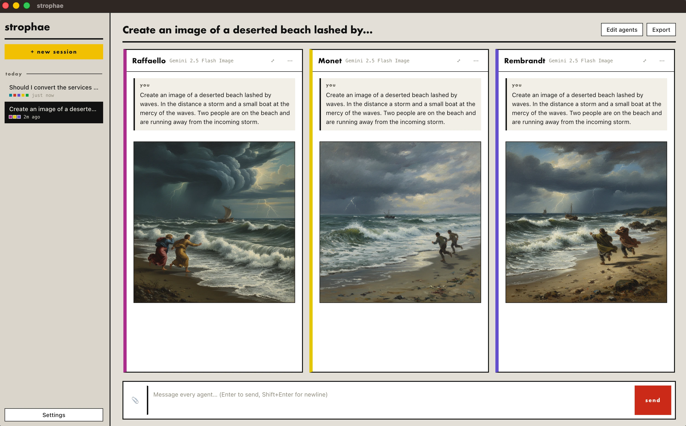
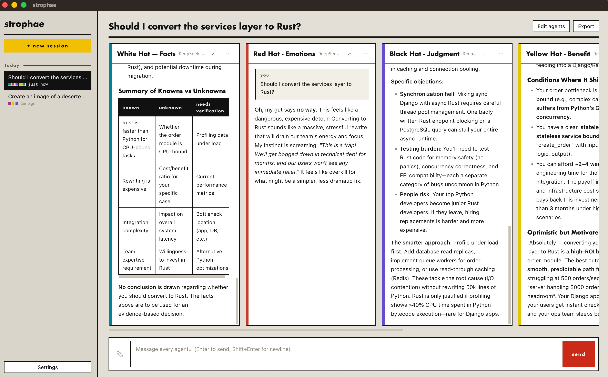

streaming
every agent answers at once
One send fans out to the whole council. Tokens arrive live in each column, so you compare answers as they form.
free & open source · macos + windows
strophae is a desktop app for macOS and Windows. You write the prompt once. Every agent in your council answers it at the same time, each with its own model, system prompt and colour, streaming live in its own column.
one send · three models · three columns filling at once
features
Four browser tabs and the same question pasted four times is not a workflow. Give every seat at the table a voice, then ask once.
streaming
One send fans out to the whole council. Tokens arrive live in each column, so you compare answers as they form.
personas
Name, colour, model and system prompt per agent. Save the good ones as personas and seat them again next session.
models
OpenRouter carries GPT, Claude, Gemini, Llama, DeepSeek, Mistral and hundreds more. The model list is yours to edit in Settings.
attachments
PDF, Word, Markdown, CSV and images attach to the shared context, to a single agent's brief, or to one message.
rich replies
Mermaid fences render as real diagrams inside the column. Image models paint into the conversation, audio models speak.
languages
The interface speaks English and Italian and follows your OS. Your words and the models' replies are never translated behind your back.
screenshots
Two real sessions, captured straight out of the app.
Give each agent an image model and its own brief. The same prompt comes back as three different canvases, streamed into their columns and kept with the session. One button saves any of them to disk.

The bundled persona library seats de Bono's Six Thinking Hats around your question: facts, emotion, judgment, benefit. Every answer lands as formatted markdown, tables and all, that you can read side by side.

In Greek drama the chorus turned as one and answered the scene in strophes. Many voices, one line to answer. strophae is that chorus for your questions.
privacy
Sessions, agents and attachments live in a single JSON document in your user folder. Delete the folder and strophae never knew you.
The OpenRouter API key is encrypted at rest with the OS keychain (safeStorage) and is only ever sent to OpenRouter.
The renderer's Content-Security-Policy allows exactly one network destination: openrouter.ai. Nothing else leaves the app.
download
Two builds, cut from the same commit by GitHub Actions on every version tag: Apple Silicon and Windows x64. Free, MIT, no account, nothing to sign up for.
macosarm64
A disk image for Macs with Apple Silicon (M1 and later), macOS 11 Big Sur or newer. Drag it into Applications and you are done.
strophae.dmgor the plain .zip of the app bundle
First launch: the build is signed ad-hoc, not with a paid
Apple certificate, so Gatekeeper asks once. Right-click the app → Open, or run
xattr -dr com.apple.quarantine /Applications/Strophae.app.
windowsx64
An installer for 64-bit Windows 10 and 11. It installs per user, so there is no administrator prompt, and it leaves your data in place if you uninstall.
strophae-setup.exeor the portable .zip, no installer
First launch: the build is not code-signed, so SmartScreen warns once. Click More info → Run anyway.
Every release — notes, older versions, checksums in the build log — lives on the releases page. Both builds come out of a public workflow, so you can read exactly how the file you downloaded was made.
run it
strophae is built with Electron, Bun and React. All you need is Bun: clone, install, start.
To talk to real models, open Settings and paste an OpenRouter key
(sk-or-…, from openrouter.ai/keys).
You do not have to: the packaged builds are one click away. Mac App Store and Microsoft Store releases are on the way, documented in PACKAGING.md.
# macos · windows · needs bun.sh
git clone https://github.com/mtct/strophae
cd strophae
bun install
bun run start
support
strophae is free, MIT licensed and built by one person in the open. If it saves you a stack of chat tabs, a donation keeps the columns streaming and the store releases coming.
Ko-fi takes one-off tips, GitHub Sponsors does monthly. Starring the repo and filing a good bug report are free and help just as much.
{kind=link}
{kind=link}